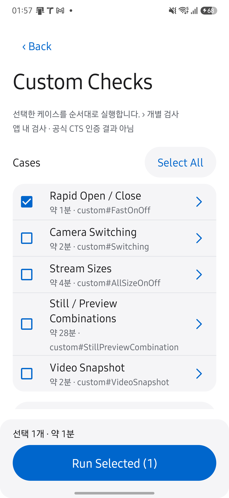
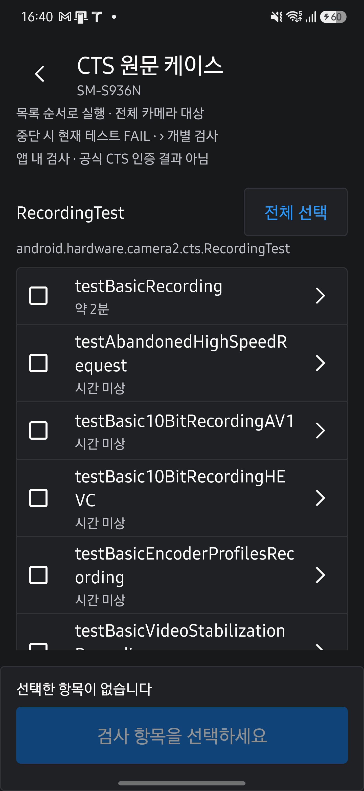
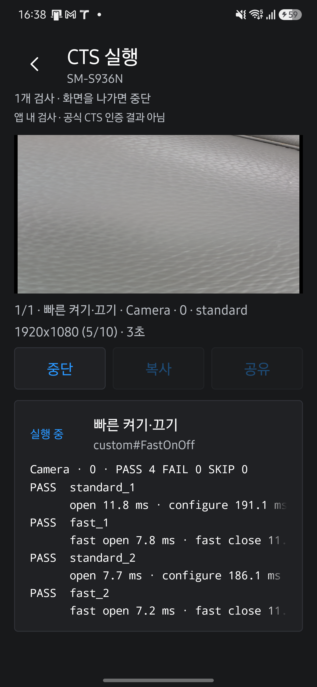
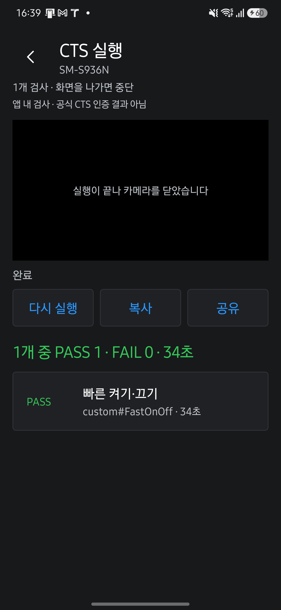

HAL CAMERA / User Guide
The same test, inside the app.
지원한다고 적힌 촬영 조합은 실제로도 동작할까요.
Lab → CTS에서 확인할 항목을 골라 실행해 보세요. 카메라를 열고, 사진을 찍고, 녹화한 결과를 판정과 함께 읽습니다.
앱의 결과는 사전 점검용입니다. 공식 CTS 판정은 cts-tradefed의 test_result.xml로 확인합니다.
선택한 항목을 실행하세요
- Live의
Lab → CTS를 엽니다. Custom Checks또는AOSP CTS를 고릅니다. 원문 케이스는 Android 14 이상에서 사용할 수 있습니다. 방식 비교에서 차이를 확인하세요.- 실행할 항목을 체크합니다. 하단에서 선택 개수와 예상 시간을 확인합니다.
Run Selected (선택 개수)를 누르고 필요한 권한을 허용합니다.- 끝난 카드를 눌러 결과를 확인합니다.
선택한 항목에 판정과 소요 시간이 표시됩니다. 실패나 SKIP이 있으면 판정 읽기에서 다음 확인 항목을 찾으세요.
검사를 조작하거나 보고서를 가져오는 방법은 다음과 같습니다.
- 한꺼번에 선택하려면 그룹의
Select All을 누릅니다. 선택은 다음에 열 때도 유지됩니다. - 도중에 멈추려면
Stop을 누릅니다. 현재 항목은중단됨, 나머지는실행 안 함으로 남습니다. - 결과를 가져오려면
Copy로 전체 보고서를 클립보드에 넣습니다.Share는 같은 내용을 다른 앱으로 보냅니다. - 다시 검사하려면
Run Again을 누릅니다. 같은 항목을 처음부터 실행합니다.
권한·예상 시간·실행 순서
- Live의 카메라를 닫은 뒤 CTS를 엽니다.
- 카메라 권한이 필요하며 녹화 항목은 마이크 권한도 확인합니다.
- 항목마다 공개 카메라를 순회합니다. 컬러 출력이 없거나 외장 카메라이면 CTS와 같은 사유로 건너뜁니다.
- 한 항목이 카메라를 닫고 결과를 보고한 뒤 다음 항목을 시작합니다.
목록과 진행 화면에서는 다음 정보를 표시합니다.
- 행마다 제목과 예상 시간을 표시합니다. 이력이 없는 원문 메서드는
시간 미상으로 표시하며, 커스텀 행에는 원본도 표시합니다. - 진행 중에는 단계별 결과를 바로 추가합니다. 완료 후에는 판정과 소요 시간을 표시하고 머리글에 전체 결과를 모읍니다.
항목 하나만 보려면 행의 ›를 누릅니다. 단일 항목도 Run·Stop·Copy·Share로 조작합니다.
커스텀 케이스는 한 단계가 실패해도 나머지를 계속 실행합니다. CTS 원문은 중단 처리에 몇 초가 걸릴 수 있습니다.
검사 방식의 차이
같은 기능을 확인하더라도, 실행하는 코드와 판정 단위가 다릅니다.
- 커스텀 케이스: CTS 규칙과 상수를 앱의 Kotlin으로 옮긴 다섯 가지 검사입니다. 카메라와 단계별로 판정합니다.
- CTS 원문 케이스: AOSP의 Java 테스트를 앱 안의 JUnit으로 실행합니다. 테스트 메서드 하나에 판정 하나를 냅니다.
CTS 판정과 Benchmark의 성능 저하 판정은 별개입니다.
아래 화면은 2026년 9월 29일 Galaxy S25+·Android 16에서 HAL CAMERA 0.15.0을 실행해 촬영했습니다. 촬영 조건과 확인 범위를 함께 확인하세요. 이미지를 누르면 원본이 열립니다.
커스텀 케이스를 선택하세요
확인하고 싶은 동작에서 시작하세요.
- 빠른 켜기·끄기: 열고 닫는 두 순서의 첫 프레임을 비교합니다.
- 카메라 전환: 카메라를 바꿔 열고 녹화합니다.
- 모든 크기 켜기·끄기: 지원하는 모든 프리뷰 크기를 엽니다.
- 정지 영상 × 프리뷰 조합: JPEG와 프리뷰 크기 조합을 검사합니다.
- 동영상 스냅샷: 녹화하면서 사진을 한 장 찍습니다.
횟수·시간·통과 조건
빠른 켜기·끄기 · custom#FastOnOff
표준 열기와 빠른 열기를 5회씩 번갈아 수행합니다.
- 표준 열기: 열기 → 프리뷰 세션 → 첫 프레임 → 닫기 순서입니다.
- 빠른 열기: 열기 직후 닫기 → 다시 열기 → 첫 프레임 → 닫기 순서입니다.
첫 프레임의 SENSOR_TIMESTAMP와 프레임 번호를 검사합니다. 마지막 줄에는 두 방식의 첫 프레임 중앙값을 비교합니다.
카메라 전환 · custom#Switching
카메라를 차례로 열어 첫 프레임을 받고 닫는 전환을 5회 반복합니다.
그 뒤 카메라마다 가장 큰 CamcorderProfile로 3초 녹화합니다. 녹화는 파일·트랙·크기와 길이 오차 20 %만 검사합니다.
모든 크기 켜기·끄기 · custom#AllSizeOnOff
SurfaceHolder로 보고하는 프리뷰 크기 전부를 큰 것부터 하나씩 열어 첫 프레임을 확인합니다. 1080p 상한을 두지 않습니다.
정지 영상 × 프리뷰 조합 · custom#StillPreviewCombination
JPEG 크기 전부와 프리뷰 크기(1080p 이하) 전부의 조합마다 세션을 구성합니다.
프리뷰 첫 프레임 뒤 정지 영상을 한 장 찍고, 요청한 크기의 디코딩 가능한 JPEG인지 검사합니다.
StillCaptureTest#testStillPreviewCombination의 순서와 QCIF 예외를 따르되 AE·AF 수렴은 기다리지 않습니다.
동영상 스냅샷 · custom#VideoSnapshot
가장 큰 CamcorderProfile로 25초를 녹화합니다. 5~20초 사이 무작위 시점에 같은 세션으로 JPEG 스냅샷을 한 장 찍습니다.
동영상은 RecordingTest#testVideoSnapshot의 프레임 드롭률 8 %(15 MP 초과 스냅샷은 12 %)를 검사합니다.
스냅샷은 크기와 디코딩을 검사합니다.
실제 화면 보기


커스텀 검사와 CTS 원본의 관계
custom# 원본은 CTS 클래스에 그대로 대응하는 메서드가 없는 케이스입니다. 검사 문구는 CTS CameraTestUtils에 같은 검사가 있으면 그 문구를 따릅니다.
RecordingTest#testBasicRecording은 CTS 원문 케이스로만 제공합니다.
녹화 판정 규칙(BasicRecordingRules)은 카메라 전환과 동영상 스냅샷이 공유합니다.
CTS 원문 메서드를 선택하세요
검사할 기능에 맞는 클래스를 고르세요. Android 14 이상에서 사용할 수 있습니다.
클래스마다 다음 범위의 메서드를 제공합니다.
RecordingTest: CamcorderProfile 녹화, 동영상 스냅샷, 고속·슬로모션 녹화, 프리뷰 크기별 녹화 등 16개 메서드입니다.StillCaptureTest: JPEG·HEIC·RAW·DNG 촬영, AE/AF 수렴, 줌, 회전, 초점 거리, 프리뷰와 정지 영상 크기 조합, 타임스탬프 등 21개 메서드입니다.BurstCaptureTest: JPEG·YUV·RAW 연속 촬영의 프레임 순서와 처리량을 검사하는 3개 메서드입니다.
업스트림 본문이 TODO뿐인 testCameraRecorderOrdering·testMediaCodecRecording·testTimelapseRecording은 목록에서 제외합니다.
측정 이력이 없는 메서드는 시간 미상으로 표시합니다. UiAutomation이나 @TestApi가 필요한 메서드는 초기화 단계에서 실패할 수 있습니다.
기존 기기별 결과와 소요 시간은 Validation에 있습니다.
실제 화면 보기


CTS 원문 케이스는 Android 14 이상에서 사용할 수 있습니다. AOSP 테스트를 앱 실행 환경에 맞춰 실행하므로 공식 CTS 인증을 대신하지 않습니다.
실제 화면 보기


판정을 읽으세요
판정을 읽을 때에는 어떤 카메라의 어느 단계를 검사했는지 함께 살펴보세요.
커스텀 케이스는 카메라와 단계별로 판정합니다. PASS 행에도 시간과 수치를 남깁니다.
FAIL의 상세 문구는 CTS assertion 메시지와 같습니다.
카메라·단계 이름 읽기
커스텀 케이스의 PASS·FAIL·SKIP은 카메라와 단계 단위로 붙습니다.
카메라는 진행 줄과 보고서 모두 Camera · 0처럼 축약 표기로 적습니다. 한 줄에 단계와 수치가 함께 들어가기 때문입니다.
단계 이름은 케이스마다 다릅니다.
- 동영상 스냅샷: 프로파일 이름을 표시합니다.
- 빠른 켜기·끄기:
standard_1·fast_1과compare를 표시합니다. - 카메라 전환:
round_1과record를 표시합니다. - 크기 케이스:
1920x1080처럼 크기를 표시합니다. - 조합 케이스:
4000x3000/1920x1080처럼 정지 영상과 프리뷰 크기를 표시합니다.
PASS 행에도 열기·세션 구성·첫 프레임·닫기의 소요 시간이나 녹화 길이·프레임 수 같은 수치를 남깁니다.
경계에 가까운 통과를 다시 실행하지 않고 볼 수 있습니다.
FAIL의 상세 문구는 CTS의 assertion 메시지와 같으므로 원본 테스트 결과와 나란히 읽을 수 있습니다.
CTS 원문은 테스트 메서드 단위로 판정합니다. SKIP은 통과했다는 뜻이 아닙니다.
- PASS: JUnit 실패가 없고 카메라를 하나 이상 열었습니다. 실행 조건과 측정값을 확인하세요.
- FAIL: 실패가 한 건 이상 있습니다. 실패 카드의 예외 메시지와 카메라 ID를 확인하세요.
- SKIP: assumption으로 건너뛰었거나 모든 카메라를 건너뛰어 하나도 열지 않았습니다.
건너뛴 이유에서 미지원 기능과 조건을 확인하세요.
SKIP 이유와 로그 읽기
앱은 openDevice 호출 기록으로 카메라를 실제로 열었는지 확인합니다.
원문에서 모든 카메라를 continue로 건너뛰고 통과한 경우도 앱에서는 SKIP으로 표시합니다.
건너뛴 이유 카드는 다음 근거를 모읍니다.
assumption 메시지를 표시합니다.
테스트가 남긴 “… skipping” 로그를 표시합니다.
예를 들어
Camera 0 does not support HEIC_ULTRAHDR, skipping은 카메라 0이 해당 형식을 지원하지 않는다는 뜻입니다.SkipDiagnosis가 원문의continue조건을 다시 확인한 키와 값을 표시합니다.HEIC UltraHDR 검사라면
SCALER_STREAM_CONFIGURATION_MAP에ImageFormat.HEIC_ULTRAHDR(0x48455548)가 있는지와 실제 출력 형식 목록을 보여 줍니다.
모든 카메라의 이유가 같으면 한 줄로, 다르면 카메라별로 표시합니다.
업스트림 코드 자체가 카메라를 열지 않는 메서드도 이유를 남깁니다. 예를 들어 10비트 AV1 경로는 getDynamicRangeProfile()의 switch에 AV1 case가 없습니다.
앱은 자기 프로세스의 logcat만 읽습니다. 카메라별·프로파일별 세부 정보가 모두 남는 것은 아닙니다.
실패 카드에는 예외 메시지와 CTS 호출 위치 세 줄을 표시합니다. 어느 카메라에서 실패했는지는 메시지의 카메라 ID로 확인하세요.
녹화한 동영상은 앱 전용 폴더에 test_video.mp4로 쓰고 판정 뒤 삭제합니다. 정지 영상과 스냅샷은 크기와 디코딩만 확인하고 버립니다.
CTS 원문 케이스도 같은 앱 전용 폴더(getExternalFilesDir)에 씁니다. 앨범에는 아무것도 남지 않습니다.
실제 화면 보기


다음 단계: 검사 통과 여부와 별도로 성능 변화를 비교하려면 Benchmark를 확인하세요. CTS는 통과·실패를, Benchmark는 얼마나 걸리는지를 답합니다.